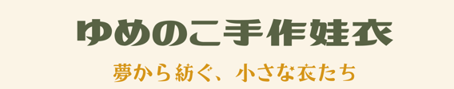

YUMENOKO PHOTO ARCHIVE · 01
ゆめのこ写真館
みんなの小さな思い出。
收藏穿上ゆめのこ之後，一個個可愛的日常片刻。
MEMORIES IN LITTLE CLOTHES
返圖收藏
第一張寫真，等待收藏。
將返圖放進專用相簿後，這裡會以小尺寸寫真牆呈現每個可愛日常。

YUMENOKO PHOTO ARCHIVE · 01
收藏穿上ゆめのこ之後，一個個可愛的日常片刻。
MEMORIES IN LITTLE CLOTHES
將返圖放進專用相簿後，這裡會以小尺寸寫真牆呈現每個可愛日常。